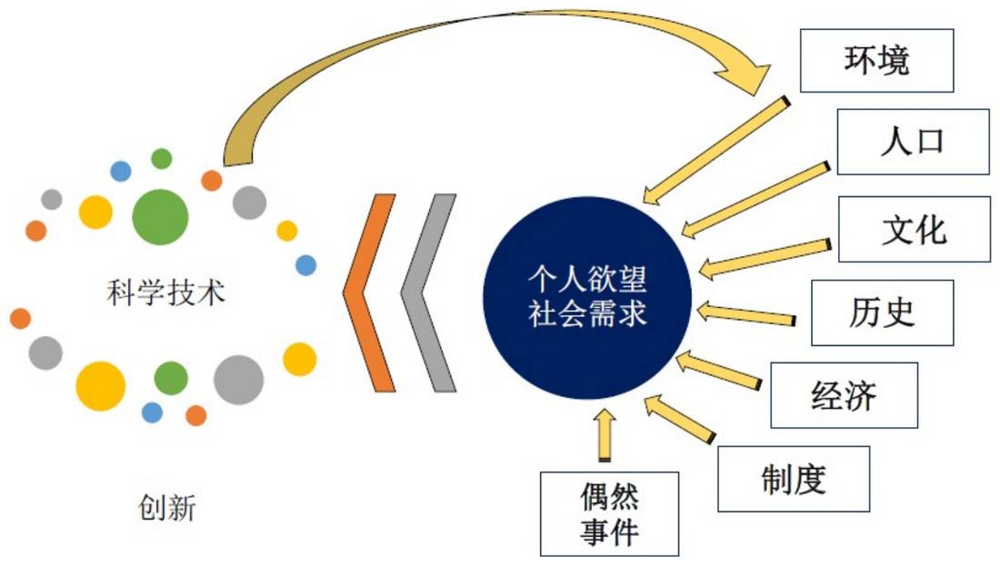

人类需求与科技创新的动力

人为什么要创新？欲望、社会需求与外部条件怎样共同推动创造？
人类的创新能力，让生活不断越过已有的边界。工具、技术和科学知识一代代积累，构成后人创造新事物的基础。五千多年前出现的车轮，今天仍在无数产品中转动；古老的观察和经验，也常在新的知识与技术条件下获得新的用途。创新既创造新东西，也不断改造前人留下的东西。
人类为什么创新，又怎样创新？地理、文化、制度、人口和经济，都为这个问题提供了重要线索。
《枪炮、细菌和钢铁》关注地理环境与农业、技术传播的关系；《新教伦理和资本主义精神》从文化与价值观讨论经济活动；《国家为什么失败》等著作强调制度对激励和资源配置的影响。商业竞争则让技术改进与利润相互推动，形成持续投入的动力。
历史积累同样重要。一项科技成就进入本地的“知识池”，就为后来的创造增加了可组合的部件。《技术的本质》等著作揭示了这种组合过程。已有的设备、技能和组织方式，也会影响下一步的选择，形成路径依赖。
这些视角各有所见。本书把观察的起点放在人身上：人们希望解决什么问题，怎样借助知识和工具改变生活？
“需求是创新之母。”欲望与需求，把人的行动同自然环境、市场、文化和制度联系起来。有人为了温饱改进农具，有人为了财富和荣誉发明机器，也有人因好奇而探索未知。创新成果又会改变生活，唤起新的欲望。沿着这条线索，我们可以把科技史中的创造者、使用者和社会变迁连在一起。
理解科技创造，需要把人的内在动机与外部激励联系起来。好奇、求生、财富、荣誉和成就感，使人愿意投入探索；市场需求、公共任务、文化价值和制度激励，则影响这些愿望怎样表达、能否获得支持。发明者可能因兴趣开始研究，也可能为解决他人的问题、回应社会期待而行动。自然环境、文化和制度，正是通过影响具体的人及其选择，进入科技创新的过程。人的欲望和社会需求，由此成为外部条件与科技成就之间的重要纽带。
在各种解释人的动机的理论中，马斯洛需求理论提供了一条适合本书的线索。1943年，他提出生理、安全、归属与情感、尊重、自我实现等需求；其后期思想又把讨论延伸到自我超越。本书据此采用包含自我超越的六类需求框架。它把维持生命、与人交往、发挥能力和探索生命之外的意义放在同一视野中，使我们能够追问：人们创造一种工具、研究一个问题，究竟希望改变生活的什么方面？
马斯洛强调需求的相对优先性：当食物、栖身之所和安全受到威胁时，这些问题通常更能集中人的注意力；基本生活有所保障以后，人们往往有更多条件追求交往、尊重、能力发挥与精神探索。这为理解创新重点的变化提供了启发。一个社会把大量精力用于提高食物供给，与另一个社会投入更多资源研究疾病、改善交通或探索宇宙，背后有需求轻重和实现条件的差别。
这种需求关系允许多种愿望同时存在。饥寒中的人仍会追求尊严，富足社会也持续面对疾病和安全威胁；一项创造还可能同时带来收入、声望与求知的满足。后来的动机研究进一步强调需求的并存及文化差异。需求层次所提供的启发，在于辨认人们关切的不同方面，以及这些关切如何随条件变化获得不同的优先程度。
文化也影响同一种需求的含义。有人把自我实现理解为个人才能与独立事业，有人更看重家庭责任、集体成就或公共服务。内维斯在1983年对中国管理情境的研究中，特别强调归属感及群体关系，并据此调整需求的排列。这类研究提示我们，在跨地区和长时段比较中，既要关注求生、安全、交往等共同需要，也要考察不同社会怎样赋予它们具体内容。
本书采用马斯洛模型，正因为它能把这些不同方面放进一个连续的讨论空间：从维持生命到发挥能力，再到超越直接功利的探索。其基本需要可为古今不同社会提供共同的比较语言；需求优先程度及其表达方式的变化，又为理解地域和时代差异留下空间。以此作为分析脚手架，我们可以沿着“人希望得到什么、社会支持什么、科技实现了什么”这一线索，把人的动机与科技史连接起来。
社会需求来自人与人之间的联系，也在组织、市场和权力关系中形成。个人希望获得食物，城市还需要稳定的粮食供应与运输；个人希望免受伤害，国家会组织防御、公共卫生和灾害应对。不同群体的利益、能力与影响力各不相同，社会优先解决什么问题，要经过价格、政策、公共投入与文化评价等机制。个人愿望因此能够汇成共同任务，一些群体的要求也可能得到更强的资源支持。
身处具体社会的创造者，选择项目时既要考虑兴趣、才能和已有知识，也要面对资金、材料、制度与使用者。社会需求可以通过市场回报成为发财和创业的动机，通过公共任务成为责任感，也可以通过声望和文化价值成为追求荣誉的动力。一个人能够同时为了求知、谋生和服务社会从事研究。个人欲望与社会驱动在科技活动中相互转化，社会需求对创新的作用也就落实为人的选择和组织的行动。
基于这些讨论，本书提出“需求与科技创新动力学”概念模型（图I-1），把外部条件、个人欲望与社会需求、科技活动联系起来。人的求生、交往、求知和发挥能力等愿望，为创新提供持续动力；自然条件、人口、文化、制度、经济与历史积累，影响需求的优先程度和实现办法；创造者把这些需要与可用知识结合，形成具体的探索与发明。不同地区和时段由此可能呈现不同的创新方向与节奏。
科技成果又反过来改变这组关系。农业提高食物供给，支持定居、人口增长与分工，也提出储存、运输和治理的新问题；信息技术扩大交往范围，改变工作与消费，同时催生新的市场和公共任务。人口聚居和社会网络扩展，使越来越多的创新需要协作与组织支持。人、社会和科技在相互塑造中前进，这一反馈过程构成本书观察科技史的基本线索。
图I-1 个人欲望、社会需求、外部条件与科技创新之间的关系示意。

本文选自《欲望的力量：人类科技创新简史》（第二版）开篇“欲望与创新”——需求创新动力学：人类需求与科技创新的动力。下一篇：科技六类价值：从需求看科技的六类价值；连载总索引见《欲望的力量》连载总索引。
本编其他连载：科技六类价值：从需求看科技的六类价值 · 万年科技前沿：科技前沿演进的万年趋势 · 三次科技革命：人类的三次科技大革命 · 人口与科技创新：人口规模与科技创新